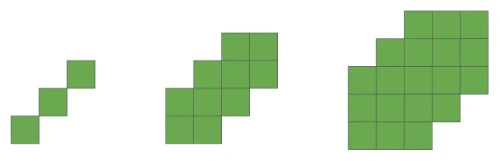
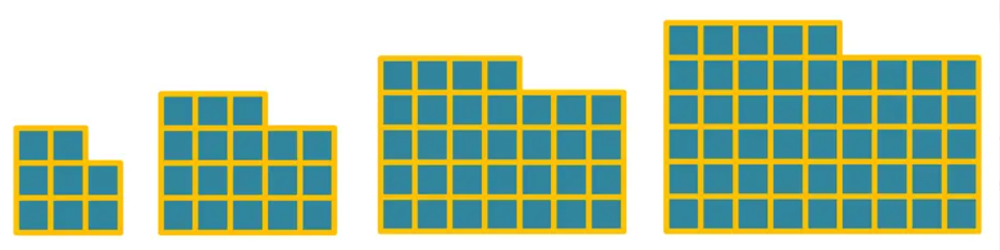

Hay una serie de ejemplos típicos de sucesiones que aparecen con frecuencia. Veamos algunos de ellos.
Progresiones aritméticas
Resuelve los dos siguientes problemas
Una modista
Una modista quiere copiar una blusa que vio en una revista. La blusa tiene filas de perlas, cuyo número queremos determinar. La primera fila tiene 78 perlas, la segunda fila 74 perlas, la tercera fila 70 perlas... y así sucesivamente hasta la última fila, que tiene 10 perlas.
- Determine una sucesión que modele esta situación. Indique el tipo y los parámetros de la sucesión.
- Determine el número de filas de perlas.
- Calcule el número total de perlas necesarias para decorar esta blusa.
- La modista solo dispone de un total de 600 perlas. ¿Cuántas filas puede decorar con esta cantidad?
Manzanas ricas de Steinsel
En una finca de Steinsel dedicada al cultivo de manzanos, se quiere plantar una parcela de forma triangular. Los árboles se colocan en filas paralelas. En la primera fila se plantan 5 manzanos, y en cada nueva fila se colocan 3 manzanos más que en la fila anterior.
- Determine una sucesión que modele la cantidad de manzanos por fila. Indique el tipo y los parámetros de la sucesión.
- ¿Cuántos manzanos hay en la décima fila?
- ¿Cuántos manzanos se necesitan en total para plantar 12 filas?
- Si se dispone de un total de 500 manzanos, ¿cuántas filas completas se pueden plantar siguiendo este patrón?
Una progresión aritmética es una sucesión de números reales en la que la diferencia entre dos términos consecutivos es constante.
A esta constante se le llama diferencia de la progresión y se suele denotar con la letra d.
En otras palabras, cada término de la progresión se obtiene sumando siempre la misma cantidad al término anterior:
Esta fórmula permite conocer el siguiente término a partir del anterior, pero a menudo necesitamos una fórmula que nos permita calcular cualquier término de la sucesión sin necesidad de conocer todos los anteriores. Para eso usamos el término general:
Cuando se desea conocer la cantidad total que se ha acumulado en los primeros términos de una progresión aritmética, se usa la fórmula de la suma:
Explicación / Justificación de la fórmula: Suma de una progresión aritmética – GeoGebra
Progresiones geométricas
De nuevo, intenta resolver otros dos problemas:
Depósito de aguas en Berdorf
En una pequeña estación meteorológica de Berdorf se ha detectado una filtración en un depósito de agua. Cada día se pierde un 30% del volumen de agua que contenía el día anterior, debido a una fuga constante. El primer día había 15000 litros en el depósito.
- Determina una sucesión que modele esta situación, indicando el tipo de progresión y sus parámetros.
- ¿Cuánto agua queda después de 7 días?
- ¿Qué ocurre con la cantidad de agua a medida que pasan muchos días? ¿Tiene límite la sucesión?
Frutales en expansión
En una finca experimental de Serós (municipio orticultícula de la provincia de Lleida), se plantaron 30 árboles frutales el primer año. A partir de entonces, como la cosa funcionaba, cada año se aumentó un 25% el número de árboles plantados con respecto al año anterior, con el objetivo de cubrir toda la parcela rápidamente.
- Modela esta situación mediante una sucesión , indicando el tipo de progresión y sus parámetros.
- ¿Cuántos árboles se habrán plantado en el sexto año?
- ¿Cuál será el número total acumulado de árboles plantados en los primeros 6 años?
Una progresión geométrica es una sucesión de números reales en la que el cociente entre dos términos consecutivos es constante.
A esta constante se le llama razón de la progresión y se suele denotar con la letra r.
En otras palabras, cada término de la progresión se obtiene multiplicando siempre por la misma cantidad al término anterior:
Esta fórmula permite calcular el siguiente término a partir del anterior, pero a menudo necesitamos una expresión que nos permita conocer cualquier término sin calcular todos los anteriores. Para eso usamos el término general:
Si queremos saber la cantidad total acumulada en los primeros términos de una progresión geométrica, usamos la fórmula de la suma (válida siempre que ):
Otras sucesiones
Intenta buscar el término general y de las siguientes dos sucesiones
Sucesión 1

Sucesión 2

Una progresión aritmética de orden superior es una sucesión cuyos términos no tienen una diferencia constante, pero cuyas diferencias de orden superior sí lo son.
Recordemos que:
- En una progresión aritmética de orden 1, la diferencia entre dos términos consecutivos es constante.
- En una progresión de orden 2, las diferencias entre las diferencias consecutivas son constantes.
- En una progresión de orden 3, las diferencias de las diferencias de las diferencias son constantes... y así sucesivamente.
Ejemplo: progresión aritmética de orden 1
La sucesión tiene diferencia constante .
Ejemplo: progresión aritmética de orden 2
La sucesión
- Diferencias de primer orden:
- Diferencias de segundo orden: → ¡Constantes!
Por tanto, es una progresión aritmética de orden 2 (también llamada sucesión cuadrática).
Una sucesión aritmética de orden se puede expresar mediante un polinomio de grado .
Por ejemplo: es una progresión aritmética de orden 2.
¿Puedes encontrar una sucesión cúbica (orden 3)? Intenta encontrar una sucesión cuyas diferencias de tercer orden sean constantes.